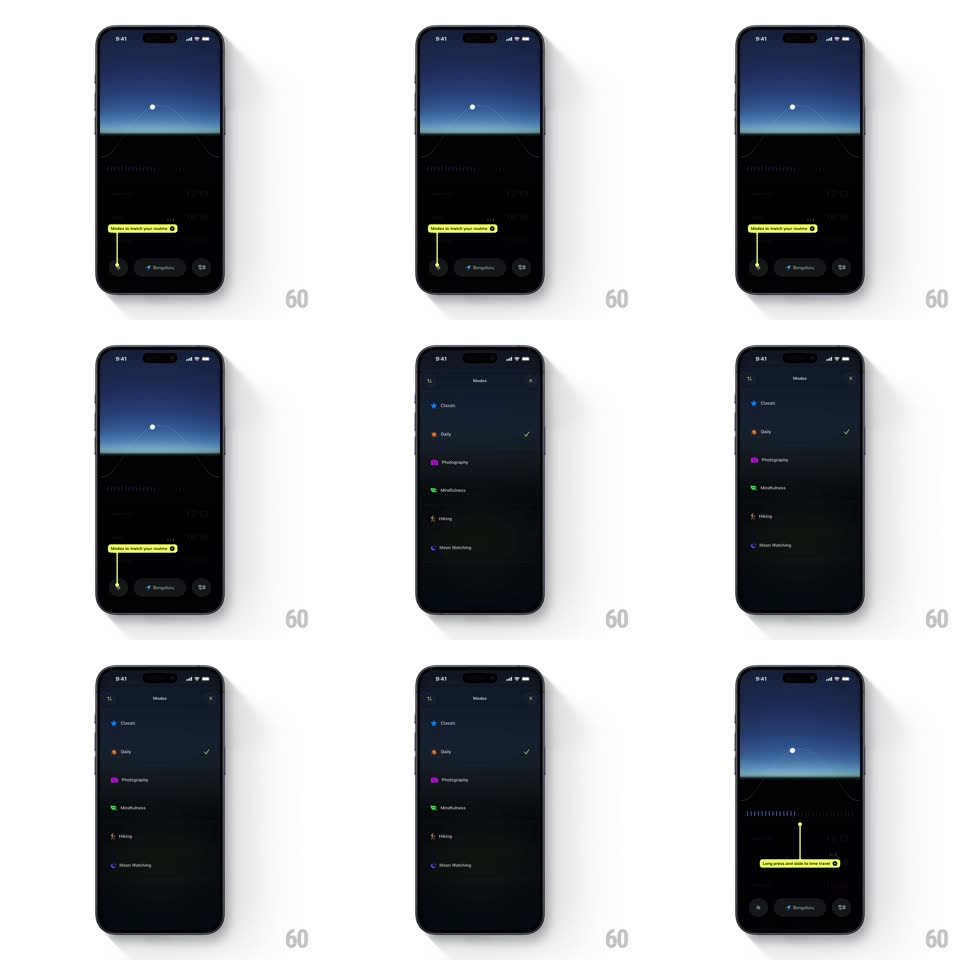

Media
Frame-by-frame

Rebuild this interaction 1:1: Lumy's mode picker - a yellow coachmark ("Modes to match your routine") points at the bottom toolbar; tapping the mode pill expands a springy Modes sheet (Classic, Daily, Photography, Mindfulness, Hiking, Moon Watching) that morphs up from the toolbar and collapses back after selection.

Rebuild this interaction 1:1: Lumy's mode picker - a yellow coachmark ("Modes to match your routine") points at the bottom toolbar; tapping the mode pill expands a springy Modes sheet (Classic, Daily, Photography, Mindfulness, Hiking, Moon Watching) that morphs up from the toolbar and collapses back after selection.
## Integration
Integration: stack-agnostic spec - springs given as stiffness/damping, timed motions as duration + curve; map every value to your framework and animation library of choice.
## Scene
Dark screen: a blue-gradient window illustration over a waveform section, and a bottom toolbar of pill buttons. A yellow rounded coachmark with a tail points down at the active mode pill. The Modes sheet: "Modes" header with X, a list of modes with colored icons and a check on the selected one.
## Motion spec
Pattern: toolbar-to-sheet morph, ~500ms.
- Coachmark: bobs gently (+-4px, 1.6s) until first tap, then fades out (200ms).
- Expand: the tapped pill morphs into the sheet - its bounds grow upward (spring ~340/26, 400ms), rounding into the sheet's top corners while the list rows fade in staggered (30ms, bottom to top).
- Select: tapping a row moves the check with a spring pop (scale 0.5 -> 1, ~420/18) and the row highlights (150ms).
- Collapse: the sheet shrinks back into the toolbar pill (spring ~340/26, 350ms), the pill's label crossfading to the new mode.
## Calibration
- The sheet's bottom edge never leaves the toolbar's position - the morph grows from it.
- One check at a time; the check travels, it does not re-appear.
## Reduced motion
The sheet slides up (250ms) without morphing; the check appears without pop.
## Don't miss
- The pill-to-sheet shared-bounds morph is the interaction - no modal cut.
- The coachmark tail always points at the active pill, not the screen center.